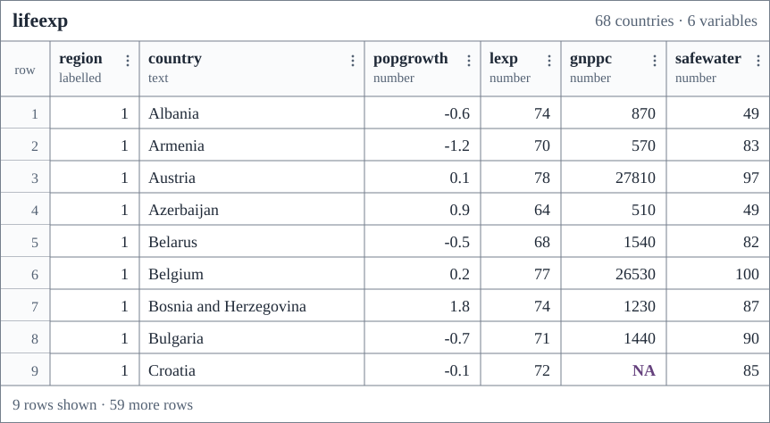
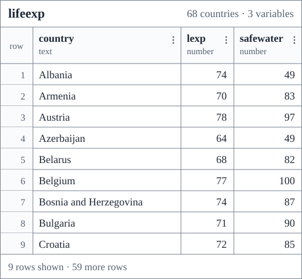
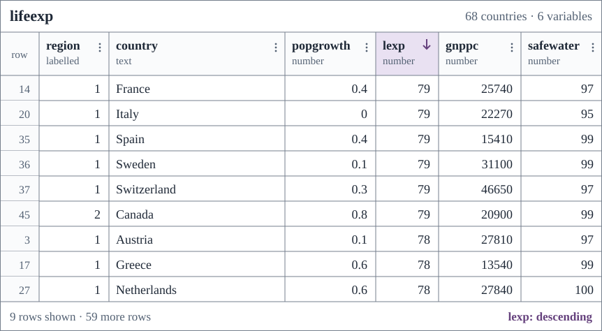

library(tidyverse)
library(tidystata)7 Inspect a dataset
Which countries are in our data, and what can their measurements tell us? We have selected columns and rows from the country table. Now we return to it for a closer look at individual records, variable descriptions, and missing measurements, using the same data supplied by tidystata.
By the end of this chapter, you will be able to preview and browse a table, read a first numerical summary, find variable names and descriptions, check available measurements, and download, import, and save a data file. Begin with the package-loading commands from Section 1.2; for the file examples, reopen the project folder from Section 1.1.1.
Chapter 2 introduced tibbles and their printed previews. Here we inspect what the country table contains and what its measurements mean.
7.1 Preview the table
Load the packages in your current session. We will use lifeexp, a dataset included with tidystata. No download, file import, or survey preparation is needed.
library() makes a package available in this session. Run these package-loading lines again after restarting R.
Start with the printing method from Chapter 2. A short preview lets us check column names and see a few actual records. It does not tell us the distribution of values across the full dataset.
Typing the table name prints it in the console without opening a viewer or assigning a new object:
lifeexp# A tibble: 68 × 6
region country popgrowth lexp gnppc safewater
<hvn_lbll> <chr> <dbl> <dbl> <dbl> <dbl>
1 1 Albania -0.6 74 870 49
2 1 Armenia -1.2 70 570 83
3 1 Austria 0.1 78 27810 97
4 1 Azerbaijan 0.9 64 510 49
5 1 Belarus -0.5 68 1540 82
6 1 Belgium 0.2 77 26530 100
7 1 Bosnia and Herzegovina 1.8 74 1230 87
8 1 Bulgaria -0.7 71 1440 90
9 1 Croatia -0.1 72 NA 85
10 1 Czechia -0.1 75 6140 95
# ℹ 58 more rows
A tibble prints only the rows and columns that fit, but its header reports the full dimensions: 68 rows and six columns here. The far-left numbers give row positions. The omitted records remain stored in lifeexp.
nrow() counts rows and ncol() counts columns in the complete table:
nrow(lifeexp)[1] 68ncol(lifeexp)[1] 6The counts are still 68 rows and six columns, even though the console displays only a preview. Type cues such as <chr> for text and <dbl> for numbers help read the display. There is no need to memorize a catalogue of R types before working with these columns.
A narrow console may also omit columns from a tibble printout. The footer lists columns that did not fit; they remain stored in the table. The viewer introduced next lets us inspect these columns and the rows beyond the preview. Printed values may also be shortened or rounded to fit the display. A preview does not select a smaller dataset or make its countries representative of the whole table.
7.2 Browse the table
The printed preview gives us a first look. To examine individual values throughout the full dataset, we can open a data viewer. If you have used a spreadsheet, this offers a familiar way to inspect a table. You can scroll down through rows and across columns to examine individual cells. The viewer lets you inspect the data without editing the stored values.
Tidystata’s browse() opens a table in the data viewer supplied by your editor. Supply the table name inside the parentheses. The command opens the complete dataset without changing it or assigning a new object. Run it in your editor:
browse(lifeexp)Figure 7.1 illustrates the table view opened by browse(lifeexp). The window and controls may differ between editors. Nine rows are shown in this schematic view; the full table still contains 68 countries and six variables. The far-left number is the row position, while country identifies the observation. Missing measurements appear as NA, meaning unavailable rather than zero, and region retains its attached value labels. Scroll to inspect countries beyond those visible at the top; all 68 remain available.

browse(lifeexp).
As Chapter 2 explained, a tibble keeps columns together in a table. Here, each row keeps the values belonging to one country together. The table contains 68 countries and six variables. The country column identifies the countries.
The data contain historical World Bank indicators. lexp is life expectancy at birth in years; popgrowth is annual population growth in percent; gnppc is GNI per capita in current US dollars, Atlas method. These refer to 1998. safewater is the percentage using safely managed drinking water services in 2000. The dataset does not cover every country in the world. The dataset notes document its source and units.
To read the rows and columns more closely, Table 7.1 presents a smaller view of the same data. It shows the first five countries in lifeexp and three of its variables. The headings give each variable’s meaning and the short name that R uses. For now, focus on how the information fits together.
Country (country) |
Life expectancy in years (lexp) |
Safe water, percent (safewater) |
|---|---|---|
| Albania | 74 | 49 |
| Armenia | 70 | 83 |
| Austria | 78 | 97 |
| Azerbaijan | 64 | 49 |
| Belarus | 68 | 82 |
Read the first row from left to right. Albania has a recorded life expectancy of 74 years and safe-water access of 49 percent. These values belong together because they describe the same country. Now read down the life-expectancy column: each number measures the same attribute for a different country.
This gives us three useful terms:
- An observation is the unit described by a row. Here, one observation is one country.
- A variable is an attribute recorded in a column, such as country name or life expectancy.
- A value is one entry in the table, such as Albania’s life expectancy of 74 years.
When each observation has its own row, each variable has its own column, and each cell contains one value, we call the arrangement tidy data. Table 7.1 follows that arrangement: reading across keeps one country’s information together; reading down lets us compare the same variable across countries.
A column is a sequence of values, called a vector. A country-name column contains text; a life-expectancy column contains numbers. Columns in the same table have the same number of entries, so their positions keep each country’s measurements together. We can use these tables without first learning every other structure R supports.
A tibble is a storage format; tidy data describe the arrangement of information. Converting an object to a tibble does not by itself make its organization appropriate for a research question.
7.3 From records to summaries
Browsing helps us inspect individual observations. We can find a country and read its measurements across a row. But with thousands of rows, we could scroll to row 1,000 and still struggle to describe a column as a whole. Summary statistics give compact numerical descriptions of recorded values, such as their average and their minimum and maximum.
7.3.1 Follow a mean and a standard deviation
Before reading a summary table, we can follow its two central calculations on short abstract inputs. c() combines values in their written order. These numbers are a syntax demonstration, with no claim about respondents or countries:
x <- c(2, 4, 6, 8, 10)mean() takes a numeric vector and returns its arithmetic mean: add the values and divide by their number. It returns one value without changing the input:
mean(x)[1] 6The result is 6: the five values add to 30, and 30 divided by 5 is 6. An average can describe the center without being an observed value.
The standard deviation, calculated by sd(), describes spread around that mean. It takes a numeric vector and returns one value in the input’s units:
sd(x)[1] 3.162278The result is about 3.16. Standard deviation uses squared distances from the mean, divides their sum by the number of values minus one, and takes the square root. It is neither the largest minus the smallest value nor a guarantee that every value lies within one standard deviation of the mean.
Compare the same five values with a second, more concentrated vector:
y <- c(4, 5, 6, 7, 8)
mean(x)[1] 6mean(y)[1] 6sd(x)[1] 3.162278sd(y)[1] 1.581139Both means are 6, but the values in y lie closer to that center. Its standard deviation is about 1.58, compared with 3.16 for x. The mean and standard deviation answer different questions about the same values.
7.3.2 Missing inputs to a calculation
An unavailable input changes what can be calculated. Store a short vector containing a missing value, then calculate its mean:
with_missing <- c(2, 4, NA, 8, 10)
mean(with_missing)[1] NAThe result is NA: by default, an unknown input makes the mean unknown. The named argument na.rm = TRUE asks mean() to exclude missing inputs from this calculation:
mean(with_missing, na.rm = TRUE)[1] 6The four recorded values add to 24, so their mean is 6. This is the mean of the available values; it does not establish what the omitted value would have been. The saved vector still contains five entries, including NA.
sd() also returns NA by default when an input is missing. Give it the same exclusion instruction separately:
sd(with_missing)[1] NAsd(with_missing, na.rm = TRUE)[1] 3.651484The second result describes spread among the four recorded values. Exclusion belongs to this call: setting na.rm for mean() does not set it for sd() or for later calls. Neither operation fills in missing data or deletes rows from a table.
7.3.3 Apply the calculations to countries
Recall $ from Section 6.4: the table name on the left and column name on the right extract that column. What is average life expectancy across these countries, in years?
mean(lifeexp$lexp)[1] 71.66176All 68 countries have a recorded life expectancy, so all contribute equally to the average of about 71.7 years. A country with a larger population has no extra influence in this calculation. It is a country average, not a population-weighted average across people.
Water coverage has missing measurements. Compare the default mean with the explicit available-measurement calculation, then count the countries that contribute:
mean(lifeexp$safewater)[1] NAmean(lifeexp$safewater, na.rm = TRUE)[1] 77.16667lifeexp |>
filter(!is.na(safewater)) |>
nrow()[1] 54The first mean is NA; the second is about 77.2 percent across the 54 countries with measurements. The filtered table is used only for the count; lifeexp retains all 68 countries and its missing values. The average alone does not tell us why 14 water measurements are unavailable.
7.3.4 Read a summary table
For a first look, summ() from tidystata takes a table followed by the numeric columns to summarize. Here we request life expectancy and safe-water access, writing the column names without quotation marks:
summ(lifeexp, lexp, safewater)# A tibble: 2 × 8
name type n unique min mean sd max
<chr> <chr> <int> <int> <dbl> <dbl> <dbl> <dbl>
1 lexp dbl 68 20 57 71.7 5.16 79
2 safewater dbl 54 32 36 77.2 20.6 100
Each output row describes one variable, rather than one country. name identifies the variable and type describes its storage type (dbl means numeric here). n counts non-missing values; unique counts distinct non-missing values. min and max are the smallest and largest values, mean is the arithmetic mean, and sd is the standard deviation just demonstrated. Both retain the measurement’s units. Unlike the default mean() and sd() calls, summ() excludes missing values automatically and reports the contributing count in n.
Life expectancy averages about 71.7 years across the 68 countries, with recorded values from 57 to 79 years. Its standard deviation is about 5.2 years. Safe-water coverage averages about 77.2 percent among the 54 countries with measurements; its standard deviation is about 20.6 percentage points. Fourteen countries lack that measurement. These describe the countries with recorded values in this dataset, not every country in the world.
The calculations use all non-missing values in each requested column, not just the rows visible in the viewer. The result is a new summary table; lifeexp is unchanged. We return to the choice and interpretation of statistics in Chapter 9.
7.4 Inspect names and labels
Recall ds() from Section 3.2. It lists the exact column names that we can use in code:
ds(lifeexp)[1] "region" "country" "popgrowth" "lexp" "gnppc" "safewater"The names are useful for writing commands, but abbreviations can be hard to interpret. Tidystata’s variables() takes the table and returns a list of its column names with variable labels where available. Each row of this result describes one variable:
variables(lifeexp)# A tibble: 6 × 2
name label
<chr> <chr>
1 region Region
2 country Country
3 popgrowth Avg. annual % growth
4 lexp Life expectancy at birth
5 gnppc GNP per capita
6 safewater Safe water
The name column contains the names used in code; label contains their descriptions. For example, lexp is paired with “Life expectancy at birth”. Neither entry is an individual country’s value. variables() leaves all country records unchanged. Labels help us identify a measure; the dataset notes supply its source and units.
Variable labels describe columns. Value labels attach meanings to recorded codes, such as region names attached to numeric codes. The <hvn_lbll> cue marks this metadata in region; numeric storage does not make its categories quantities to average.
7.5 Inspect values and missingness
codebook() reports names, labels, types, observed counts (n), and counts of distinct observed values (unique). Additional column names limit its report:
codebook(lifeexp, lexp, safewater)# A tibble: 2 × 5
variable label type n unique
<chr> <chr> <chr> <int> <int>
1 lexp Life expectancy at birth double 68 20
2 safewater Safe water double 54 32
Life expectancy has 68 observed values and 20 distinct observed values; water coverage has 54. The remaining 14 water measurements are missing. An observed count tells us how much information is recorded, not whether the measurements are correct or why others are unavailable. The region codes describe categories, not quantities to average. Always connect the printed values to their definitions.
7.6 Inspect and sort a view
We can focus the view on a few variables. Bare column names after the table specify columns in the supplied order. Here country identifies the country, lexp gives life expectancy in years, and safewater gives the water percentage:
browse(lifeexp, country, lexp, safewater)Figure 7.2 displays three columns from the same 68-country table. The illustration shows the same nine rows as the full-table view. Choosing columns does not choose observations. Both calls leave lifeexp unchanged. This recalls the column selection learned in Chapter 3.

browse(lifeexp, country, lexp, safewater): the same observations with three selected variables.
Return to the full-table view from browse(lifeexp). Use your viewer’s sorting control to order lexp from highest to lowest. The control’s name and location depend on your editor. Figure 7.3 shows the descending sort; the downward arrow beside lexp marks its direction. Across the complete dataset, life expectancy runs from 79 down to 57 years. All six variables move together with their countries; sorting does not attach one country’s water measurement to another country.

browse(lifeexp), after sorting by descending life expectancy in the viewer.
Sorting within the viewer changes its display, not the stored order of lifeexp. Chapter 4 shows how to create and retain a reordered table in code.
7.7 Download and open a data file
Your own survey will usually arrive as a file, rather than a dataset supplied by an R package. Downloading saves a file on your computer. Importing reads that file into an object in the current R session. We will use a second life-expectancy dataset to practice both steps.
Our World in Data’s life-expectancy page presents estimates in years, compiled from historical sources and the United Nations World Population Prospects. Read the source description before downloading: these are period life-expectancy estimates, which summarize mortality conditions in a particular year, rather than the eventual lifespans of people born that year.
7.7.1 Download the CSV
A CSV is a plain-text table: the first line usually contains column names, and commas separate the fields. For this lesson:
- Open your
r4ssproject folder from Section 1.1.1. Inside it, create a folder namedexamplesusing your file manager. - Open the CSV download. Your browser may download it or display its text; if it displays text, use Save As to save the file. Keep the
.csvextension. - Move the downloaded file into
examplesand name itlife-expectancy.csv. Downloading to your browser’s Downloads folder does not put the file in your project.
The online data can change. To reproduce this edition exactly, use the book’s saved CSV, downloaded on 29 October 2026, and save it in the same location. Both links supply data from Our World in Data; the book copy preserves the downloaded file without changing its values. Source notes record the attribution and the saved version.
Check the working directory and file location before importing. getwd() reports the folder from which R resolves relative paths. file.exists() takes a path in quotation marks and returns TRUE when it finds that file. First inspect your location, then check the input:
getwd()Use that location to interpret the relative path:
file.exists("examples/life-expectancy.csv")The first result should be your r4ss folder; the second should be TRUE. If it is FALSE, check the folder and exact filename, including a possible extra .txt extension or a suffix such as (1). In an R path, use forward slashes even on Windows. The path starts in the working directory, enters examples, and identifies the file.
7.7.2 Read and inspect the table
read_csv(), loaded with tidyverse, reads a comma-separated file and returns a tibble. Its first argument is the path in quotation marks. Assignment stores that tibble as life_expectancy:
life_expectancy <- read_csv("examples/life-expectancy.csv")Rows: 21565 Columns: 4
── Column specification ────────────────────────────────────────────────────────
Delimiter: ","
chr (2): Entity, Code
dbl (2): Year, Life expectancy
ℹ Use `spec()` to retrieve the full column specification for this data.
ℹ Specify the column types or set `show_col_types = FALSE` to quiet this message.
life_expectancy# A tibble: 21,565 × 4
Entity Code Year `Life expectancy`
<chr> <chr> <dbl> <dbl>
1 Afghanistan AFG 1950 28.2
2 Afghanistan AFG 1951 28.6
3 Afghanistan AFG 1952 29.0
4 Afghanistan AFG 1953 29.5
5 Afghanistan AFG 1954 29.7
6 Afghanistan AFG 1955 30.4
7 Afghanistan AFG 1956 30.8
8 Afghanistan AFG 1957 31.3
9 Afghanistan AFG 1958 31.8
10 Afghanistan AFG 1959 32.3
# ℹ 21,555 more rows
nrow(life_expectancy)[1] 21565ncol(life_expectancy)[1] 4The import message reports the dimensions and inferred column types; it is not an error. In the saved file, the table has 21565 rows and 4 columns. Entity identifies a country, territory, or aggregate region; Code contains a geographic code where supplied; Year identifies the year; and Life expectancy is measured in years. A row represents one place in one year. The first displayed rows describe Afghanistan in successive years; they are not different countries in every row.
Reuse the inspection tools from this chapter:
ds(life_expectancy)[1] "Entity" "Code" "Year" "Life expectancy"Check that place names and codes were read as text, and years and life expectancy as numbers. Blank codes can appear as NA; this does not by itself mean that the life-expectancy measurement is missing. If R reports parsing problems, investigate them before analysis. The file-reading checks in Section 18.3 show how to inspect parsing problems, identify the affected entries, and check their intended types before continuing. A successful import establishes that R could read the file, not that every value is appropriate for your question.
life_expectancy is separate from the package’s lifeexp: it has different sources, years, and rows. Importing it does not replace lifeexp, and the country examples in this chapter continue to use lifeexp. The next chapter introduces GSS for a continuous sequence of survey lessons. You can inspect your own imported table in the same way, using its actual column names and documentation.
For your own data, choose a reader that matches the file format. Chapter 18 develops Stata, SPSS, and other formats, including the treatment of labels and missing-value codes.
7.7.3 Preview clustered rows
Does the beginning of this file show the range of places it contains? Nearby rows describe successive years for the same place. A short run of rows can therefore show many years but few places.
read_csv() returns a tibble with an additional import-specific class. The printing helpers need an ordinary tibble. Use as_tibble(), introduced in Section 2.2, to create life_table with the same rows, columns, order, and values. The original import remains available as life_expectancy:
life_table <- as_tibble(life_expectancy)Compare the two printing helpers from Section 4.4 on this table:
print_headtail(life_table)# A tibble: 21,565 × 4
Entity Code Year `Life expectancy`
<chr> <chr> <dbl> <dbl>
1 Afghanistan AFG 1950 28.2
2 Afghanistan AFG 1951 28.6
3 Afghanistan AFG 1952 29.0
4 Afghanistan AFG 1953 29.5
5 Afghanistan AFG 1954 29.7
⋮ ⋮ ⋮ ⋮ ⋮
21561 Zimbabwe ZWE 2019 61.1
21562 Zimbabwe ZWE 2020 61.5
21563 Zimbabwe ZWE 2021 60.1
21564 Zimbabwe ZWE 2022 62.4
21565 Zimbabwe ZWE 2023 62.8
# ... 21,555 rows omitted in the middle; use print(x, n = Inf) to show all
# rows.
In the book’s saved CSV, the first five rows describe Afghanistan and the last five describe Zimbabwe. This view is useful for checking the file’s boundaries, but it shows only two entities because each place occupies a block of adjacent rows.
print_interval(life_table)# A tibble: 21,565 × 4
Entity Code Year `Life expectancy`
<chr> <chr> <dbl> <dbl>
1 Afghanistan AFG 1950 28.2
2397 Bosnia and Herzegovina BIH 2011 77.0
4793 Djibouti DJI 1959 43.1
7189 Greenland GRL 1964 60.7
9585 Kazakhstan KAZ 1963 58.6
11981 Malta MLT 2007 79.7
14377 North Macedonia MKD 2015 75.6
16773 San Marino SMR 2004 81.6
19169 Thailand THA 1962 51.4
21565 Zimbabwe ZWE 2023 62.8
# ... 21,555 rows omitted between displayed positions; use print(x, n = Inf) to
# show all rows.
The interval preview reaches 10 different entities across the file. Its row numbers show the positions inspected. With the same ten-row display budget, it gives broader coverage of this table than the head/tail view. This is especially useful when records are ordered in blocks by country, school, or another group.
The spacing is by row position, not by entity or year. Larger blocks can occupy more displayed positions, so interval previews do not guarantee equal coverage of groups. They are deterministic inspection views, not random samples; a repeating pattern in the row order can also be missed. Use the full data for summaries and analysis.
Both helpers return all 21565 rows unchanged. The display does not shorten the stored table or alter the place-year observations.
TipOptional: Keep a preview style
If you repeatedly inspect the same table, tidystata’s preview() can store a preferred console display on a returned object. Its first argument is the table. The named argument style = "interval" requests evenly spaced positions; omitting it gives a head/tail display. Assignment keeps the result under a new name:
life_preview <- preview(life_table, style = "interval")
life_preview# A tibble: 21,565 × 4
Entity Code Year `Life expectancy`
<chr> <chr> <dbl> <dbl>
1 Afghanistan AFG 1950 28.2
2397 Bosnia and Herzegovina BIH 2011 77.0
4793 Djibouti DJI 1959 43.1
7189 Greenland GRL 1964 60.7
9585 Kazakhstan KAZ 1963 58.6
11981 Malta MLT 2007 79.7
14377 North Macedonia MKD 2015 75.6
16773 San Marino SMR 2004 81.6
19169 Thailand THA 1962 51.4
21565 Zimbabwe ZWE 2023 62.8
# ... 21,555 rows omitted between displayed positions; use print(x, n = Inf) to
# show all rows.
nrow(life_preview)[1] 21565Typing life_preview now uses the interval style, while its row count remains 21565. All columns and stored values are retained. The original life_table keeps its ordinary printing, and the viewer is unaffected by these console preferences.
Use unpreview() to return an object with ordinary printing restored. Save and print that result:
life_plain <- unpreview(life_preview)
life_plain# A tibble: 21,565 × 4
Entity Code Year `Life expectancy`
<chr> <chr> <dbl> <dbl>
1 Afghanistan AFG 1950 28.2
2 Afghanistan AFG 1951 28.6
3 Afghanistan AFG 1952 29.0
4 Afghanistan AFG 1953 29.5
5 Afghanistan AFG 1954 29.7
6 Afghanistan AFG 1955 30.4
7 Afghanistan AFG 1956 30.8
8 Afghanistan AFG 1957 31.3
9 Afghanistan AFG 1958 31.8
10 Afghanistan AFG 1959 32.3
# ℹ 21,555 more rows
Removing the preference changes the display while retaining the complete data. For a single inspection, use print_headtail() or print_interval() directly.
7.8 Save a table to a file
The imported table exists in the running R session. Saving your script keeps the instructions, while exporting saves the table’s values to a file. write_csv() takes the table first and an output path second. Run this command in your project folder to save a separate copy:
write_csv(life_expectancy, "examples/life-expectancy-copy.csv")
file.exists("examples/life-expectancy-copy.csv")The write command normally prints no table; the check should return TRUE. The new file is inside examples. write_csv() replaces an existing file with the same name, so choose a new name when you want to keep an earlier version. This command leaves the original download and the object life_expectancy unchanged.
Open the saved copy to check that it is readable:
saved_life <- read_csv("examples/life-expectancy-copy.csv")
saved_life
nrow(saved_life)
ncol(saved_life)
ds(saved_life)Its first rows and row count should agree with the imported table. Also check its column names with ds(saved_life) and compare ncol(saved_life) with ncol(life_expectancy). A TRUE file-existence check only establishes that a file is present: a different row count, missing column, or unexpected type after readback is a reason to check which object was written and which path was read. Recheck the working directory before overwriting or re-exporting anything. CSV preserves a plain table of values, but it does not preserve R’s full type information or the variable and value labels that statistical files can contain. Keep the original download and its documentation. Section 18.4 explains other export choices.
7.9 Review
- A tibble prints a preview naturally;
nrow()andncol()report its full dimensions. print_headtail()checks boundaries;print_interval()reaches across ordered or clustered rows. Both retain the full table.- Optional:
preview()stores a console display preference;unpreview()restores ordinary printing. browse()opens a table in the viewer without changing the stored data.ds()lists column names, andvariables()connects them to available labels.codebook()checks types and recorded coverage.mean()describes center andsd()describes spread in the measurement’s units; each call needs its own missing-input decision.summ()describes numeric columns using available measurements and reports their contributing counts.getwd()andfile.exists()check location;read_csv()imports andwrite_csv()exports. Inspect the readback and preserve the original.
Next, Chapter 8 uses frequency tables to describe which categories are common and how missing answers affect a percentage. Numerical summaries and graphs follow in the same exploration part.
7.10 Exercises
- Display
lifeexpin the console, browse it in the viewer, and summarizelexpandsafewaterwithsumm(). Which display helps you inspect one country, and which describes a whole column? Check whether the full row count has changed. Predict whymean(lifeexp$safewater)returnsNA, correct the calculation, and report its contributing country count and units. Does the correction change the source table? - List the column names, then use their variable labels to identify population growth. Inspect the observed count for
gnppcwith the codebook. Does every country have this measurement? - Import the saved life-expectancy CSV as
downloaded_life. Compare head/tail and interval previews, and report what one row represents. Why do the previews show different sets of places? Check that the full row count is unchanged. Save a separate file namedlife-expectancy-practice.csvinsideexamples, then read it back and check the dimensions and column names. If the file exists but has a different row count, what would you check before exporting again? Does saving this copy change the original download?
Worked answers
Run the package setup at the start of this chapter first.
TipPreview, browse, and summarize
lifeexp# A tibble: 68 × 6
region country popgrowth lexp gnppc safewater
<hvn_lbll> <chr> <dbl> <dbl> <dbl> <dbl>
1 1 Albania -0.6 74 870 49
2 1 Armenia -1.2 70 570 83
3 1 Austria 0.1 78 27810 97
4 1 Azerbaijan 0.9 64 510 49
5 1 Belarus -0.5 68 1540 82
6 1 Belgium 0.2 77 26530 100
7 1 Bosnia and Herzegovina 1.8 74 1230 87
8 1 Bulgaria -0.7 71 1440 90
9 1 Croatia -0.1 72 NA 85
10 1 Czechia -0.1 75 6140 95
# ℹ 58 more rows
summ(lifeexp, lexp, safewater)# A tibble: 2 × 8
name type n unique min mean sd max
<chr> <chr> <int> <int> <dbl> <dbl> <dbl> <dbl>
1 lexp dbl 68 20 57 71.7 5.16 79
2 safewater dbl 54 32 36 77.2 20.6 100
nrow(lifeexp)[1] 68Run browse(lifeexp) in your editor to inspect an individual country’s row. Typing lifeexp gives a preview of the table; summ() describes each requested column using its non-missing values across the full table. The summary has two rows, one per variable, but there are still 68 countries in lifeexp. None of these calls replaces the source table.
mean(lifeexp$safewater)[1] NAmean(lifeexp$safewater, na.rm = TRUE)[1] 77.16667lifeexp |>
filter(!is.na(safewater)) |>
nrow()[1] 54nrow(lifeexp)[1] 68The default mean is unknown because 14 inputs are missing. The corrected mean describes water coverage, in percent, across the 54 countries with measurements. There are still 68 countries in the original table; excluding inputs from one calculation does not replace unknown measurements.
TipFind and inspect
ds(lifeexp)[1] "region" "country" "popgrowth" "lexp" "gnppc" "safewater"variables(lifeexp)# A tibble: 6 × 2
name label
<chr> <chr>
1 region Region
2 country Country
3 popgrowth Avg. annual % growth
4 lexp Life expectancy at birth
5 gnppc GNP per capita
6 safewater Safe water
codebook(lifeexp, gnppc)# A tibble: 1 × 5
variable label type n unique
<chr> <chr> <chr> <int> <int>
1 gnppc GNP per capita double 67 64
The label “Avg. annual % growth” identifies popgrowth as population growth; the dataset notes explain its units. The income column has 67 observed values, so one country lacks this measurement. This result alone does not explain why it is missing.
TipOpen and save a downloaded table
Place the downloaded file in examples as instructed in Section 7.7, then run:
downloaded_life <- read_csv("examples/life-expectancy.csv")
downloaded_life
downloaded_table <- as_tibble(downloaded_life)
print_headtail(downloaded_table)
print_interval(downloaded_table)
nrow(downloaded_life)
write_csv(downloaded_life, "examples/life-expectancy-practice.csv")
file.exists("examples/life-expectancy-practice.csv")
practice_readback <- read_csv("examples/life-expectancy-practice.csv")
nrow(practice_readback)
ncol(practice_readback)
ds(practice_readback)The first displayed rows describe Afghanistan in successive years. A row identifies a place and year, not a different country in every row. The head/tail preview shows Afghanistan and Zimbabwe; the interval preview reaches places throughout the file because it spreads its positions across the intervening blocks. Neither preview changes the full count of 21565 rows or guarantees balanced coverage of entities. The file check returns TRUE, and the readback has the same dimensions and names. If the count differs, check the working directory, input and output filenames, and whether a subset was exported. The new filename preserves the original download; exporting does not alter downloaded_life either.